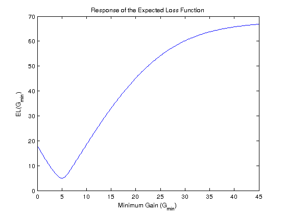
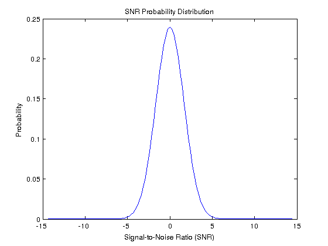
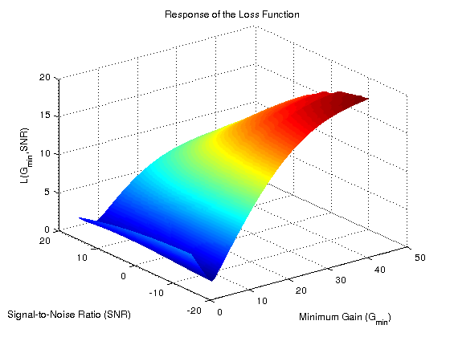
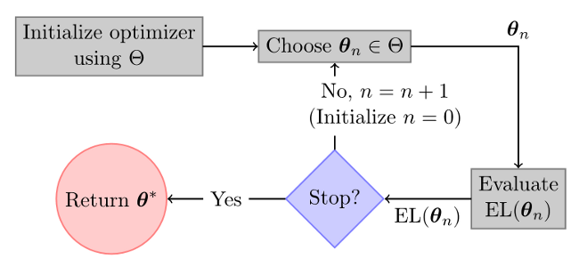
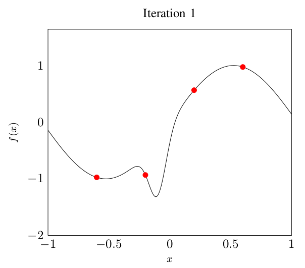
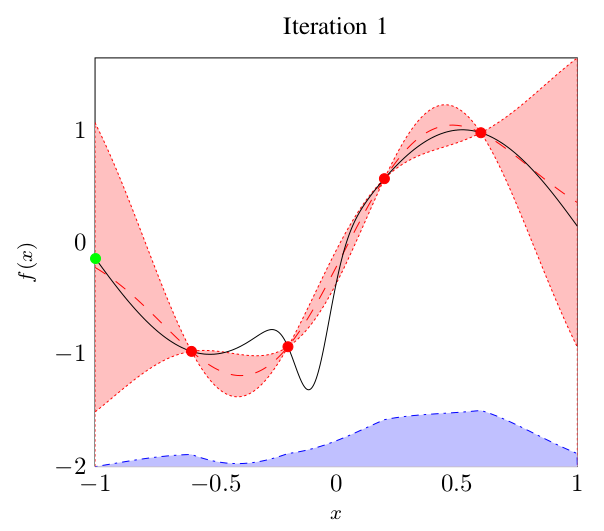
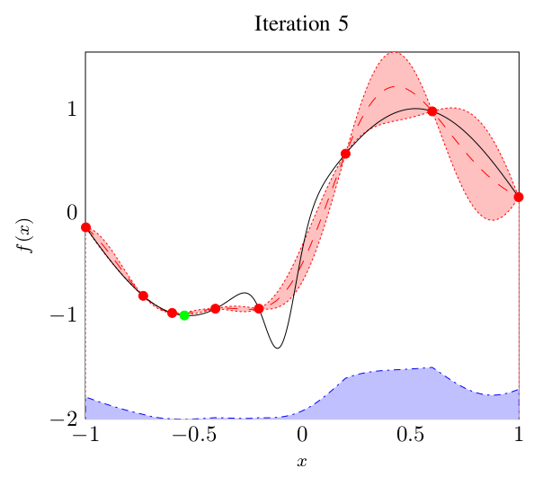
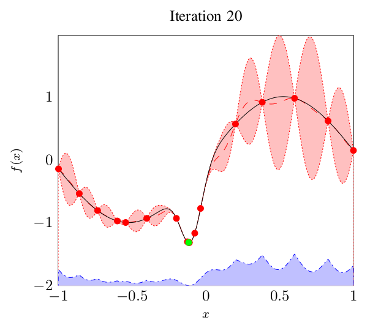
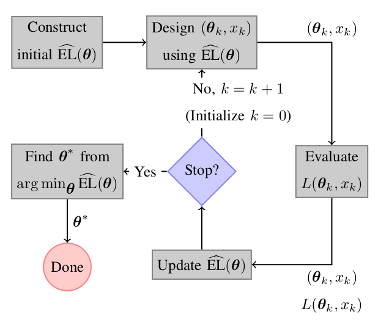
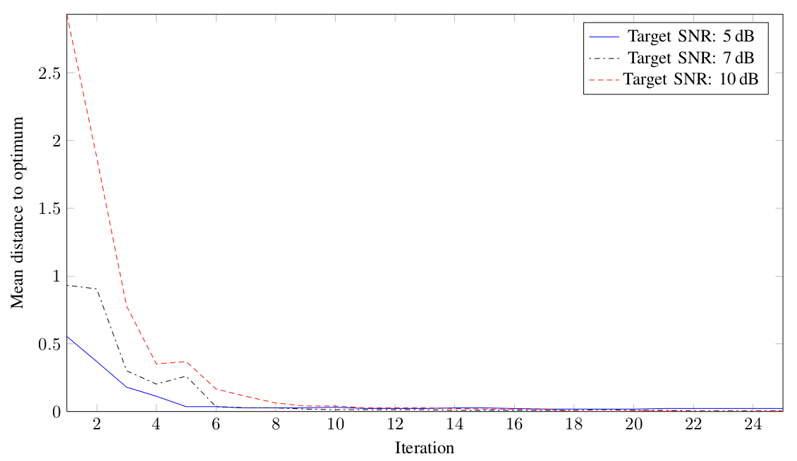

Computer-Aided Algorithm Design for Audio Processing
Graduation Presentation
Joris Kraak
April 10, 2012
Daily supervisor: Prof.dr.ir. Bert de Vries
Overview
(Computer-Aided) Algorithm Design
Conventional Methods
Gaussian Process Based Methods
Conclusions
Algorithm Design
Audio processing algorithms tunable through parameters
Noise reduction algorithm aimed at improving intelligibility of speech in noise
Removes noise power from a noisy signal
Lower bound on suppression \(\left(G_\text{min}\right)\)
Computer-Aided Algorithm Design
Problems to be solved using algorithms have non-analytical solutions
Knowledge is expressed in equations
Uncertainty is captured in parameters
Solution for a specific problem is given by fixing parameters to specific values
Audio Algorithm Design
- Algorithm proposal
- \(y_{k}=H(\theta,x_{k})\) with \(\theta\in\Theta\)
- Relevant problem instances
- \(\mathcal{X}=\{x_{1},\ldots,x_{K}\}\) with \(p(\mathcal{X})\)
- Algorithm performance function
- \(\text{EL}(\theta) = \sum_{k=1}^{K} p(x_k) L(y_{k},r_{k})\)
Optimization Problem
\(\text{EL}(\theta) = \sum_{k=1}^{K} p(x_k) L(y_{k},r_{k})\)



Evaluating \(L\) is expensive
Evaluating \(\text{EL}\) is \(K\) times as expensive
Find an optimization algorithm that solves the optimization problem in as few evaluations of \(L\) as possible
Overview
(Computer-Aided) Algorithm Design
Conventional Methods
Gaussian Process Based Methods
Conclusions
Conventional Methods
DIRECT [Jones et al., 1993]
Competitive optimization method
Require a large number of signals
Take a long time to find optimal parameters
Conventional Strategy

Convergence Behavior

350 Evaluations of \(L\)
3 experiments for different target SNR losses
Overview
(Computer-Aided) Algorithm Design
Conventional Methods
Gaussian Process Based Methods
Conclusions
Gaussian Process Based Methods
Robust Efficient Global Optimization [Janusevskis et al., 2010]
Iteratively build a model of \(\text{EL}\)
Find optimal parameters using this model
Takes 30 evaluations of \(L\) for our example
Bayesian Optimization
Quantify uncertainty using probability distributions
Optimal experimental design
Example minimization problem







Structure of EL
Assuming \(\mathcal{X}\) is Gaussian distributed
Explicit relation between \(L\) and \(\text{EL}\)
Knowledge about \(\text{EL}\) is updated after each evaluation of \(L\)
Optimization Strategy

Conceptual strategy, how these steps are implemented follows. Stop if we think our model is accurate enough.
Convergence Behavior

30 Evaluations of \(L\)
Same experiment as before, but repeated 10 times for each experiment. Uses 10 evaluations of L to create initial model. Non-monotonicity is caused by adjusting the model to the observations (temporary overfit).
Overview
(Computer-Aided) Algorithm Design
Conventional Methods
Gaussian Process Based Methods
Conclusions
Conclusions
Computer-Aided Algorithm Design is feasible
For expensive loss functions significant performance gains can be achieved
Not applicable out of the box
Numerical issues with Gaussian Processes
Investigate how well the algorithm scales to higher dimensional problems
Smoothness constraints have to be satisfied (i.e. it must be possible to model EL using a Gaussian Process) and input distribution of X has to be Gaussian. Numerical issues arise from the use of covariance matrices and inverting them.